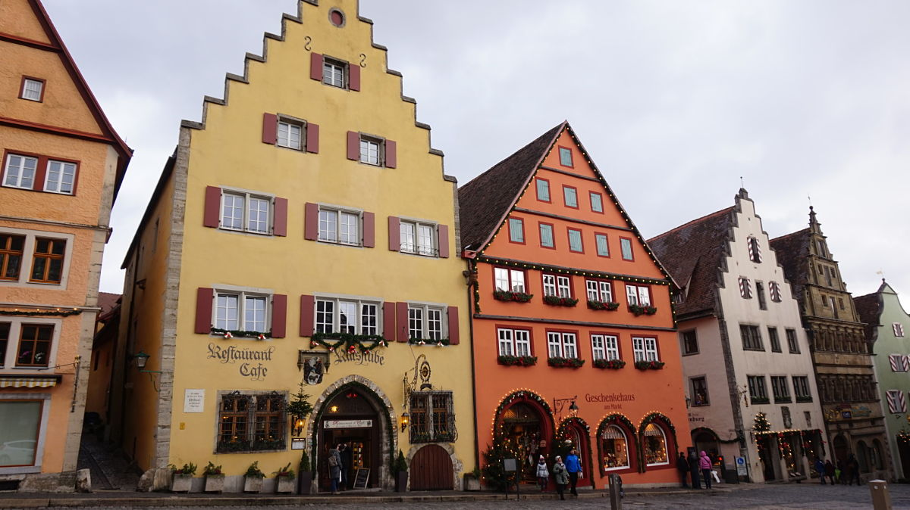
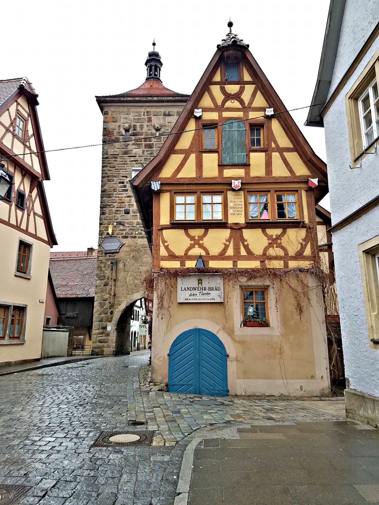
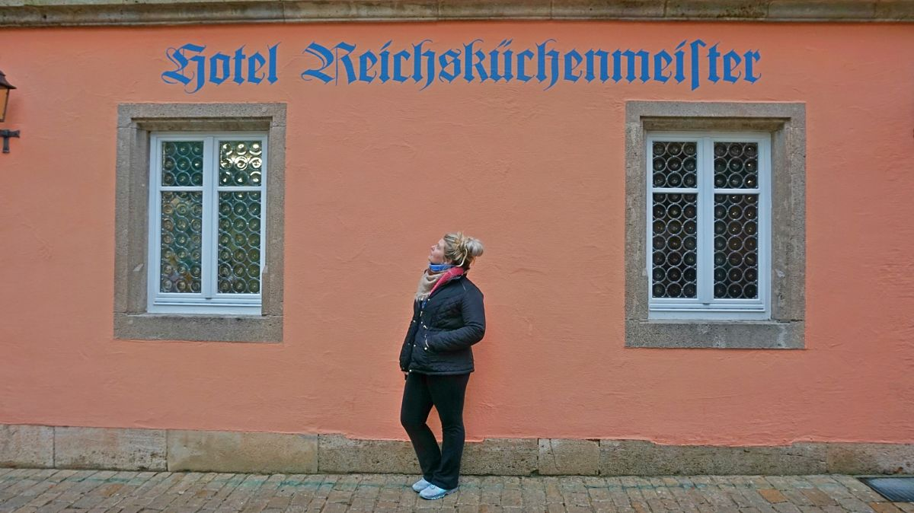
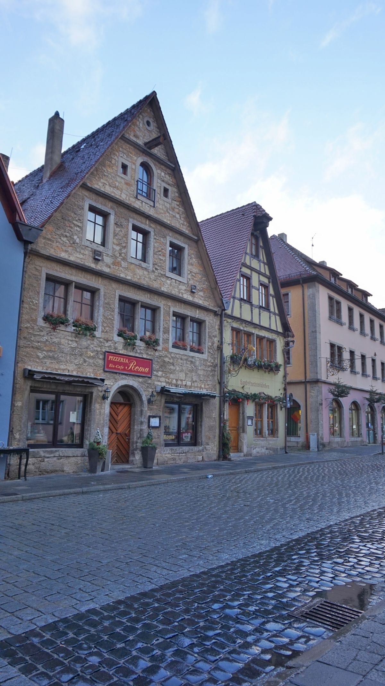

The Perfect Town of Rothenburg ob der Tauber
Imagine sitting in a window up above a tiny, beautiful town watching the rain pour down with a thrilling read in your hand and drinking the most perfect cup of tea. There are no distractions, except when the book becomes too much. Just look up and you will see people down below on the street wandering around, laughing, and staring in awe at the beautiful marvel that is this medieval town. This is Rothenburg ob der Tauber. It’s just a short train ride from Nuremburg (around an hour) or about 3 hours from Munich and completely worth the trip
We spent four nights here, and for some, this would be way too many nights. If you enjoy large cities, then Rothenburg ob der Tauber is not the place for you to spend several nights. I do think that everyone who goes to Germany should at least stop by this perfectly preserved medieval town, because it is so magical and picturesque. I have truly never seen anything quite like it. We were on a whirlwind trip starting in Munich and ending in Amsterdam, so spending some downtime in Rothenburg ob der Tauber was perfect for us and very relaxing.

Our perfect days in Rothenburg ob der Tauber consisted of waking up around 8 a.m. and enjoying our hotel’s buffet breakfast with coffee, fresh orange juice, so many croissants, prosciutto, cheese, fruit, granola, yogurt, and so much more amazing food. Sorry about that long rant, I just really, really, love food. After breakfast, we took walks on the wall that surrounds the city. It’s about 1.5 miles long, so not only is it absolutely stunning, it’s a great early morning exercise. Early in the morning, there weren’t that many people on it, so we were able to get some really good photos and stop to appreciate the history behind the wall.
After the morning walk around the city, we usually came down off the wall near a beautiful park and took in the sights before heading back into the town square. All of Rothenburg ob der Tauber has some of the best shopping available in Germany. Especially if you need to do some Christmas ornament shopping. Käthe Wohlfahrt’s Christmas Village store is an absolute Christmas wonderland, and they say they have the largest selection of German Christmas ornaments in the world. Besides Christmas ornament shopping, this town offers large selections of German bier steins, carvings, pictures, Birkenstocks, handmade goods, and so much more. Most of your time in Rothenburg will be spent roaming around looking at the beautiful medieval buildings and wandering into every shop that is open. Each shop has something unique and it’s worth going into, even if just for a moment.

Even though our shopping lasted sporadically throughout the day, there were a few other things to do in this town. In the center of town, you can climb the Town Hall tower to a stunning view, or so I’ve been told. It was foggy and rainy every single day we were there, so we decided not to climb up for fear of not being able to see anything, but many people recommended doing the climb. The town also has many walking tours. The most infamous one is called, The Night Watchman’s Tour. People rave about this tour and say The Nightwatchman is incredibly entertaining and knows so much history behind this town. The week we were there was right after Christmas, so unfortunately, The Nightwatchman didn’t do any tours that week. One rainy, cold afternoon we decided we needed to warm up a bit, so we went to the Medieval Crime and Punishment Museum. This museum is definitely worth seeing, especially if you are interested in the history of punishment and torture instruments. For some, it can be overwhelming, but for us, we really enjoyed the museum, as strange as that sounds. The Franconian dishes that many restaurants serve here are to die for and will fill you up and warm you up on the terribly cold days. We didn’t go into a restaurant we didn’t enjoy.

If you’re in Rothenburg ob der Tauber on a Wednesday night and you’re feeling a little homesick, head over to Altfränkische Weinstube, a beautiful now-restaurant in a building from the 1200s. We found out about this place through Rick Steve’s audio walking tour of Rothenburg ob der Tauber that we listened to earlier in the day. It is also mentioned in the Frommer’s guidebook, so it’s well-known, but it wasn’t over crowded at all. Every Wednesday night around 8 p.m. there is an “English Conversation Club.” This club has been meeting weekly since the 1980s and they have had guests from all over the world. It is held by local Germans who live in Rothenburg and want to practice their English with native English speakers. If you walk in and the servers notice that you speak English, you will automatically be sat at a table marked “reserved” with a few older German men. The two men that were there when we arrived (which around 6 pm, because that’s what the guides said) were named Wolfgang and Robert. They informed us that they were there to greet the early birds, but the actual meeting time is 8 pm.
After several German biers and two hours of great conversation, a few other Americans showed up, as did the man of the hour. Rick Steve’s named this man specifically in his tour as: “Hermann the German.” We weren’t sure what to expect when meeting Hermann, but he definitely lived up to his name. All the men and women in the English Conversation Club make you feel so welcome and they have incredible stories from their lives, including war stories, traveling all over Europe and the USA, and farming stories. Hermann and my husband, Logan, somehow got on the topic of farming and tractors. Low and behold, Hermann the German is a world renowned Massey Ferguson tractor collector. He even has had newspaper articles written about him and his collection. He invited us over to his farm to see his collection, and of course we jumped at the opportunity, along with the other two Americans that were there that night.

Once we walked into his shop, I was awestruck. Yes, it was just tractors, I get that, but the fact that I went to a random restaurant in a tiny town in Germany based on a guidebook’s suggestion and ended up at a German’s house having one of the most authentic experiences of my life was just so incredible to me. This night was by far my favorite experience in Germany, because to me, traveling isn’t about the luxury, it’s about the true, authentic experiences that only happen once in a lifetime. Traveling is about meeting new people and immersing yourself in their culture and getting out of your comfort zone and this is exactly what happened to us that night. Not only did they want to speak English, but they were so willing to help us learn a little bit of German and share the history of their beautiful town and country. It is something I will never forget. This experience was the perfect ending to a perfect day in this fairy-tale town.
Rothenburg ob der Tauber has so much more to offer than I have mentioned here, but you just have to go see for yourself. If you love history, medieval towns, apple strudel, getting out of your comfort zone, picturesque scenery, and taking long romantic walks on a wall that surround a city, then this is the place for you.